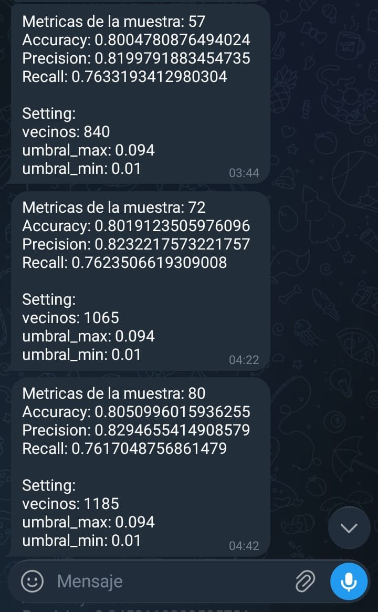
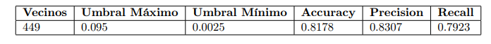
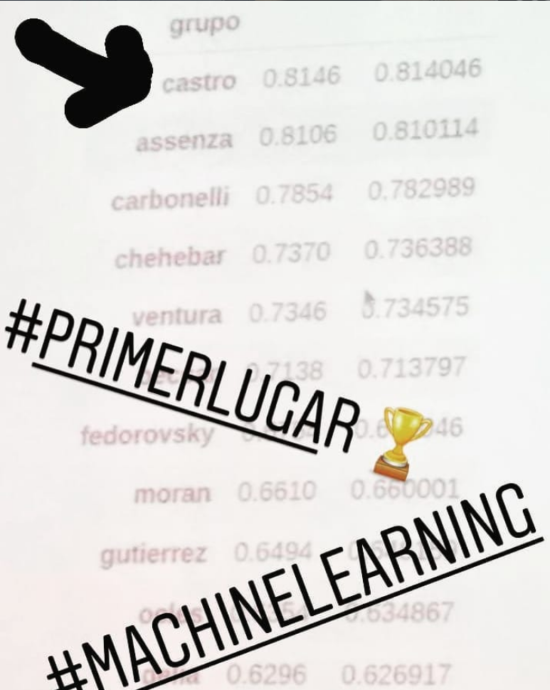

Más allá de la Norma 2: Cómo gané una competencia de Machine Learning optimizando en el transporte público
En las materias de computación es común que te den un dataset y te pidan implementar un algoritmo base. Lo divertido empieza cuando te dan la libertad de alterar las reglas del juego para competir en un tablero general por el mejor resultado de la cursada.
El objetivo del trabajo práctico consistía en construir un clasificador de críticas de películas (sentiment analysis) utilizando el algoritmo de K-Nearest Neighbors (KNN). Sin embargo, la implementación clásica de calcular distancias espaciales puras no me terminaba de convencer para procesar texto densamente poblado.
El "Hack" Algorítmico
En lugar de usar la norma Euclídea clásica (L₂) para medir qué tan geométricamente lejos estaba un vector de otro, decidí cambiar radicalmente la métrica de distancia por una lógica de palabras en común. Bajo esta premisa, mientras más vocabulario compartiera una nueva crítica con las reseñas ya etiquetadas, más se parecían en mi lógica. Al tratarse de un clasificador binario de opiniones, si un texto nuevo usaba palabras que son fuertemente comunes en críticas buenas, la inercia del solapamiento inclinaría la predicción correctamente de ese lado.
Búsqueda probabilística de hiperparámetros las 24 horas
Encontrar la combinación perfecta de hiperparámetros (el número ideal de vecinos k y los umbrales de filtrado de vocabulario mínimo y máximo) requería una cantidad inmensa de tiempo de cómputo. Como dejar un bucle estructurado barriendo secuencialmente todo el espacio de búsqueda era inviable por el tiempo disponible, diseñé un algoritmo probabilístico.
Acoté ciertos rangos elegidos por mí y automaticé el script para que corriera de forma indefinida en mi computadora, optimizando el uso del hardware. Cada vez que el algoritmo encontraba una combinación que mejoraba las métricas previas, guardaba un log en el disco rígido e invocaba un script para enviarme una notificación instantánea a través de un Bot de Telegram Customizado.

Figura 1: Captura real del bot notificando las mejoras incrementales de Accuracy y los settings exactos (vecinos, umbrales) en plena madrugada. (Haz clic para ampliar)
Esta automatización fue clave. En esa época afrontaba cerca de 4 horas de viaje diarios para asistir a la universidad. Gracias al bot de Telegram, podía aprovechar esos tiempos muertos en el transporte público para monitorear la performance del entrenamiento en tiempo real, sabiendo con precisión cuándo la búsqueda probabilística daba con un nuevo óptimo sin necesidad de estar frente al escritorio.
Las métricas definitivas del Dataset
Tras dejar el pipeline ejecutándose continuamente, el espacio de búsqueda se estabilizó en un set de parámetros óptimos bastante particular. La cantidad de vecinos óptima escaló hasta los 449, manteniendo un ajuste fino en los umbrales de selección de palabras para descartar el ruido estructural del lenguaje y los términos irrelevantes.

Figura 2: Configuración final registrada en el informe matemático que arrojó un Accuracy de 0.8178 y un Precision del 83.07% sobre el dataset oficial. (Haz clic para ampliar)
El Tablero de Posiciones
Toda la estrategia de optimización asincrónica y la reformulación conceptual de la métrica de cercanía rindieron sus frutos el día de la entrega de notas. El rendimiento logrado por el script nos posicionó firmes al tope de la tabla general de resultados.

Figura 3: Recuerdo de la publicación original compartida en redes sociales celebrando el primer puesto en la competencia de clasificación. (Haz clic para ampliar)
Mirando este desarrollo retrospectivamente, me dejó una lección crucial de ingeniería: a veces el factor diferencial no pasa por disponer de la infraestructura de cómputo más costosa o el framework del último mes, sino por saber estructurar tu entorno para que trabaje de forma autónoma para vos, combinado con un entendimiento intuitivo y lógico del dominio del problema.